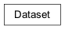

Dataset

- class gspy.gs_dataset.Dataset.Dataset(xarray_obj)
Accessor to xarray.Dataset to better handle coordinates/dimensions and variables that honour the CF convention.
Checks necessary metadata to satisfy the CF convention, and allows use with GIS software.
- Returns:
out
- Return type:
xarray.Dataset
- classmethod Survey(**kwargs)
Attach an xarray.Dataset containing GS metadata or create one from a dict
- Parameters:
kwargs (xarray.Dataset or dict) –
If xarray.Dataset checks for required metadata and spatial_ref
If dict, checks for required metadata and a spatial_ref definition
See also
Survey.Spatial_reffor more details of creating a Spatial_ref
- add_bounds_to_coordinate(name, **kwargs)
Adds bounds to a coordinate.
Important
Make sure you call this method into a return variable
ds = ds.add_coordinate_from_dictOtherwise, the bounds will not be added correctly.
- Parameters:
name (str) – Name of the variable to add bounds to.
- Returns:
Dataset with added bounds.
- Return type:
- add_coordinate_from_dict(name, discrete=False, is_dimension=False, **kwargs)
Attach a coordinate/dimension to a Dataset from a dictionary.
The DataSet is returned with the coordinate attached. Bounds are also added to the Dataset if this coordinate is not discrete.
Important
Make sure you call this method into a return variable
ds = ds.add_coordinate_from_dictOtherwise, the coordinate will not be added correctly.
- Parameters:
name (str) – Name of the coordinate
discrete (bool, optional) – Is this coordinate discrete? by default False
is_dimension (bool, optional) – Is this a coordinate-dimension? by default False
- Returns:
Dataset with added coordinate.
- Return type:
See also
Coordinate.Coordinate.from_dictfor pertinent Coordinate keywords and metadata
- add_coordinate_from_dict_np(name, discrete=False, is_dimension=False, **kwargs)
Attach a coordinate/dimension to a Dataset from a dictionary.
The DataSet is returned with the coordinate attached. Bounds are also added to the Dataset if this coordinate is not discrete.
Important
Make sure you call this method into a return variable
ds = ds.add_coordinate_from_dictOtherwise, the coordinate will not be added correctly.
- Parameters:
name (str) – Name of the coordinate
discrete (bool, optional) – Is this coordinate discrete? by default False
is_dimension (bool, optional) – Is this a coordinate-dimension? by default False
- Returns:
Dataset with added coordinate.
- Return type:
See also
Coordinate.Coordinate.from_dictfor pertinent Coordinate keywords and metadata
- add_coordinate_from_values(name, discrete=False, is_dimension=False, **kwargs)
Attach a coordinate/dimension to a Dataset using an array of values defining center values.
The DataSet is returned with the coordinate attached. Bounds are also added to the Dataset if this coordinate is not discrete.
Important
Make sure you call this method into a return variable
ds = ds.add_coordinate_from_dictOtherwise, the coordinate will not be added correctly.
- Parameters:
name (str) – Name of the coordinate
discrete (bool, optional) – Is this coordinate discrete? by default False
is_dimension (bool, optional) – Is this a coordinate-dimension? by default False
- Returns:
Dataset with added coordinate.
- Return type:
See also
Coordinate.Coordinate.from_valuesfor pertinent Coordinate keywords and metadata
- add_dimensions_from_variables(**kwargs)
- add_timestamp(key='datetime', date='date', time='time', datum='1900-01-01', date_format=None)
Combine date and time strings into a numeric datetime as decimal days since datum or date-zero, add as “t” axis.
- Parameters:
date (str) – date , if date_format is None then it can be formatted: ‘YYYY-MM-DD’, ‘YYYY/MM/DD’, ‘MM-DD-YYYY’, or ‘MM/DD/YYYY’
time (str) – time in format ‘HH:MM:SS’ or ‘HH:MM:SS.sss’
datum (str) – date and time of date-zero in format ‘YYYY-MM-DD’, default is ‘1900-01-01’
date_format (str) – custom format for date such as ‘DD/MM/YYYY’
- Returns:
with numeric timestamp array added to variables.
- Return type:
self._obj
- add_variable_from_dict(name, **kwargs)
- add_variable_from_dict_np(name, **kwargs)
Add a variable to the Dataset
Automatically maintains coords on the variable given its dims.
Important
Make sure you call this method into a return variable
ds = ds.add_coordinate_from_dictOtherwise, the variable will not be added correctly.
- Parameters:
name (str) – Name of the variable
values (array_like) – Values of the variable
- Returns:
Dataset with variable added.
- Return type:
- Raises:
ValueError – If the shape of the values does not match the specified dimensions.
- add_variable_from_values(**kwargs)
- assign_coords(coord, data_var, discrete=False, **kwargs)
- property attrs
- property couplet_labels
- property distance_along_line
- get_all_attr(attr, path, **kwargs)
- interpolate(dx, dy, variable, **kwargs)
- property is_projected
Does the dataset have a projected spatial reference
- Returns:
out
- Return type:
bool
- property json_metadata
- static metadata_template(data=None, metadata_file=None, systems=None, **kwargs)
Metadata template for a dataset, and for the systems that recorded it.
- Parameters:
data (str or pandas.DataFrame or gspy.file_handlers.file_handler, optional) – The data to describe, as a filename, a table already read in, or a handler that has already read one.
metadata_file (str or dict, optional) – Existing metadata, whether complete or partial. Its entries win over the template’s placeholders.
systems (str or list or dict, optional) –
Templates for the systems this dataset was recorded with. A method family key on its own, a list of keys, or a mapping of the name to file each system under onto its key or onto the arguments describing its shape:
systems='tdem' systems=['tdem', 'magnetic'] systems={'skytem_system': dict(key='tdem', transmitters=['LM', 'HM'], receivers=['z', 'x']), 'magnetic_system': 'magnetic'}
- Return type:
gspy.Metadata
See also
gspy.gs_dataset.System.System.metadata_templateWhat each system looks like
gspy.gs_dataset.System.System.templatesThe families available
- plot(hue, **kwargs)
Scatter plot of variable against x, y co-ordinates
- Parameters:
variable (str) – Xarray Dataset variable name
- Returns:
ax (matplotlib.Axes) – Figure handle
sc (xarray.plot.scatter) – Plotting handle
- plot_cross_section(line_number, variable, hang_from='elevation', **kwargs)
- required_metadata: tuple[str, ...] = ('type', 'structure', 'mode', 'method', 'instrument')
Attributes every GS dataset must carry. Subclasses narrow or widen this.
- scatter(**kwargs)
Scatter plot of variable against x, y co-ordinates
- Parameters:
variable (str) – Xarray Dataset variable name
- Returns:
ax (matplotlib.Axes) – Figure handle
sc (xarray.plot.scatter) – Plotting handle
- set_spatial_ref(kwargs)
Set the spatial ref of the Dataset.
Specifically adds an xarray coordinate called ‘spatial_ref’ which is required for GIS software and the CF convention.
Important
Make sure you call this method into a return variable
ds = ds.add_coordinate_from_dictOtherwise, the spatial_ref will not be added correctly.
- Parameters:
kwargs (dict, gspy.Spatial_ref, or xarray.DataArray) –
If dict: creates a Spatial_ref from a dict of metadata.
If an existing spatial ref, assign by reference
- Returns:
Dataset with spatial_ref added.
- Return type:
See also
Survey.Spatial_reffor more details of creating a Spatial_ref
- property spatial_ref
- subset(key, value, **kwargs)
- to_netcdf(*args, **kwargs)
Write the survey to a netcdf file
- Parameters:
args (list) – Arguments to pass to xarray.Dataset.to_netcdf
kwargs (dict) – Keyword arguments to pass to xarray.Dataset.to_netcdf
- Return type:
None
- write_ncml(file, name, indent, no_end=False)
- write_zarr(filename, group, **kwargs)
Write to netcdf file
- Parameters:
filename (str) – Path to the file
group (str) – Netcdf group name to write to
- x_axis(axis)